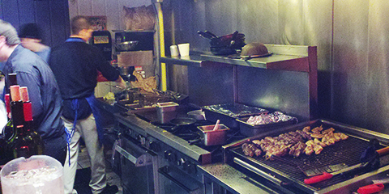
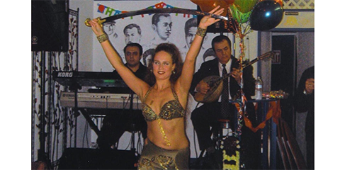

"Medium" by Thomas Hawk.
"Colorado" by Trey Ratcliff.
"Early Morning at the Monte Vista Wildlife Refuge, Colorado" by Dave Soldano.
"Sunrise in Eastern Colorado" by Pam Morris.

"colorado colors" by Jasen Miller.